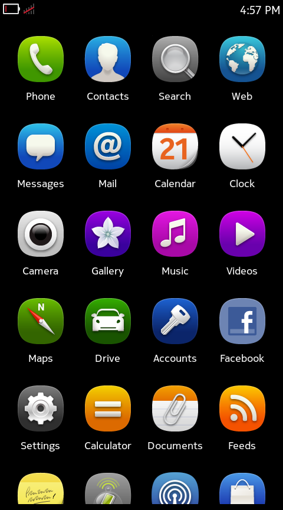
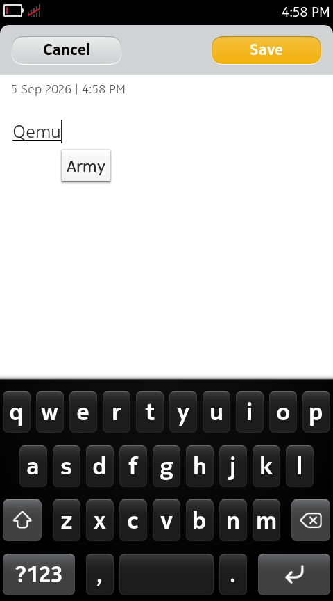
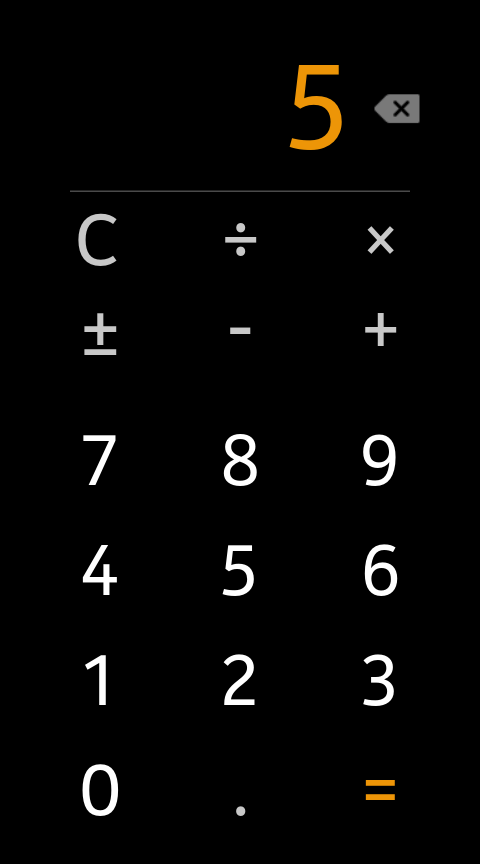

NOKIA N9 · MEEGO HARMATTAN · QEMU
Remember
the swipe?
The original Nokia N9 experience.
Running again on your Mac.
Harmattan QEMU is an experimental Nokia N9 / MeeGo Harmattan emulator for Apple Silicon. Explore the original ARM software and help preserve a piece of mobile computing history.
Apple Silicon · macOS 26+ · APFS
Experimental preview. Guest disk and kernel required separately.

THE ORIGINAL EXPERIENCE
Familiar, down to the details.
Home scrolling, edge return, arithmetic and text entry — all running in the original software.

Notes + Maliit
The original notes app and on-screen keyboard.

Calculator
2 + 3 = 5. Just like before.
Static captures do not demonstrate animation frame rate. Capture provenance and attribution
START EXPLORING
Bring Harmattan to your desktop.
Download the app
The macOS preview bundles its runtime, with a matching source kit. Check the requirements and checksums before running.
Read the preview guide →Prepare the guest inputs
Follow the exact download links, SHA-256 checksums and preparation script. The guest system and kernel are supplied separately.
Get the disk and kernel →Launch and explore
Open the app and select the prepared disk and matching kernel. Guest changes, including Notes, are discarded when the session ends.
Check compatibility →
BEFORE YOU BEGIN
What works today?
Is this a complete Nokia N9 emulator?
This is an experimental N00/QEMU port combining a PR1.0-era emulator kernel and adaptation layer with PR1.3 retail userspace. Selected original interfaces and apps work; complete N9 hardware, GPU and universal app compatibility remain unfinished.
Which computers can run it?
The current prebuilt preview requires Apple Silicon, macOS 26 or later and APFS. Full Linux and Windows runtimes are not available yet. The app is ad-hoc signed, without Developer ID signing or notarization.
Is the download ready to boot?
You still need the specified prepared PR1.3 disk and matching emulator kernel. Follow the input guide. Firmware, guest kernels, fonts and third-party device artwork are not included in the repository or app.
Can I contribute without a system image?
Yes. Start by reading patches, improving documentation or running host tests that need no firmware. English and Chinese contribution guides and AGENTS.md support working with a coding agent.
PRESERVE IT. BUILD IT TOGETHER.
Keep the swipe alive.
Test on another Mac. Reproduce an issue. Improve compatibility or help with the guides. There is room for every kind of contribution.